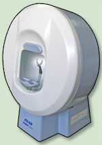

Badanie w Ortopolu wykonane jest na automatycznym perymetrze PTS-910. Jest to nowoczesne urządzenie diagnostyczne przeznaczone do precyzyjnego i szybkiego badania pola widzenia bodźcem statycznym. W zależności od wybranej strategii badania umożliwia zarówno dokładne określenie progu czułości siatkówki w danym miejscu jak i szybkie badania odsiewowe. Wbudowana kamera cyfrowa umożliwia podgląd oka w trakcie badania i przy ustawianiu pozycji pacjenta, oraz dzięki autodetekcji położenia śrenicy, ciągłą automatyczną kontrolę fiksacji. Automatycznie sterowany podbródek pozwala na precyzyjne i łatwe ustawienie prawidłowej pozycji pacjenta.